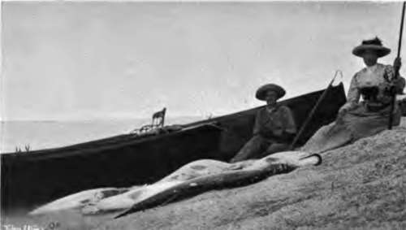
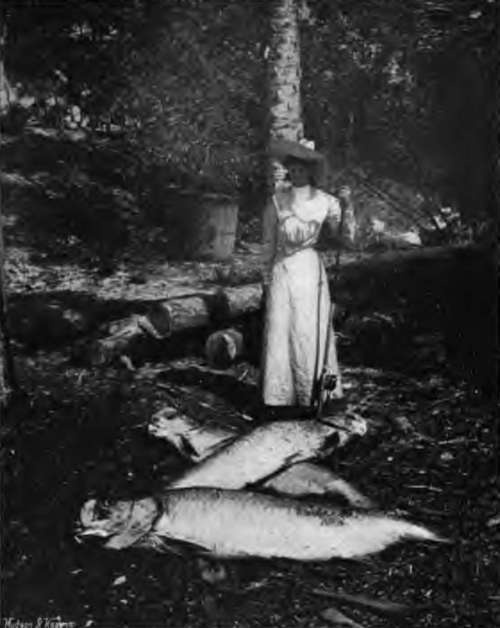

Chapter II. Tarpon And Other Big Fishes Of Florida
Description
This section is from the book "Fishing", by Horace G. Hutchinson. Also available from Amazon: Fishing.
Chapter II. Tarpon And Other Big Fishes Of Florida
Our once well-stocked rivers are rapidly declining both in volume and fish. The former, in consequence of improved systems of drainage and increased consumption of water; the latter, by over-netting and pollution. Such as still afford sport are safely guarded by those whose ample fortune permits them to pay enormous rents, and be content with often small returns.
Where, then, shall we of humble means find waters wherein, at moderate cost, we may successfully cast a fly ? Shall we try the once free rivers of Norway? All are taken up. The wilds of Canada? Here, too. all within easy reach are secured. Iceland ? Well, perhaps. The fact is, the ordinary individual must say good-bye to salmon and trout fishing, so far as filling in a holiday is concerned. An occasional never-to-be-forgotten day he may yet enjoy through the generosity of a friend, but for most of us the salmon or trout river worth fishing has faded into the hazy past. We must look around for the next best substitute, and a by no means mean one may be found in Florida, well within the reach of the man with a couple of months9 holiday, and as many hundreds of pounds to spend on it. Not a large price either as sport goes, with a month's thorough enjoyment, with guaranteed sport, and of this one consolation we may rest assured-no sport at all can be guaranteed at home; not even for the payment of a thousand down.
In this respect a distinct advantage lies with the humbler man, with his modest two hundred pounds, which will carry him some eight thousand miles, provide him with board and lodging, man and boat, give him an insight into an unknown and wildly interesting country, and a pleasant healthy life under a cloudless sky in a semi-tropical climate, and finally afford him at least a month's undreamedof sport-fishing, fishing, always fishing, and what is more, always catching something, the only uncertainty being as to what Mali hook on next, and whether it will measure fourteen feet, or as many inches, or even less; true fishing too, with rod and line finer than that ordinarily in use for pike.
Is this kind of fishing sport ? Why, certainly it is, and if it does not call for the skill of the salmon fisher, it fully compensates by bringing into action other qualifications quite as exciting for the time being; and the time being is frequently much longer than convenient.
When we were young a day's sport seemed too short, but in after life it sometimes proves too long. Now, in Florida, the slack tides are all too short, even for old people, who, by the way, are just as well able to enjoy themselves, sitting comfortably in the arm-chair of a boat, as are the more youthful generation. Florida welcomes all to her flat muddy bosom, and is gracious to old and young alike, providing ample sport for all. Away then to Florida, the land of orange groves and coons, pine apples and crabs, great palms and little terrapins, orchids and pelicans, aerial plants and alligators, bad water, moccasin snakes, and the biggest rattlers in the world. What a mixture, but the list might be greatly increased, so far, at any rate, as creepy creatures are concerned.
Modern science has brought the fishing grounds of Florida within such convenient reach that a man might easily walk down Piccadilly on the first of May and find himself wrestling with a tarpon on the twelfth.
On reaching New York, an early call on Vom Hofe. the unrivalled tackle maker of America, will place the sportsman in possession of all he needs for every description of fishing or harpooning, and although he will pay a high price for a good outfit, he will not regret having done so. English makers do not seem to realise the enormous strain their tackle will be called upon to resist; he, therefore, who equips himself at home will surely mourn the loss of many heavy fish, to say nothing of broken rods, reels, lines, and hooks.
Having placed himself unreservedly in the hands of Vom Hofe, a noted fisherman himself, the sportsman, after paying his bill of from £15 to £20, will find himself provided with no more than he requires, and with material of such excellent quality and workmanship that for a second expedition he will need only new lines and hooks. From New York tickets should be procured for Punta Gorda via Jacksonville, and from Punta Gorda a steamer leaves daily for Useppa Island, where, in three hours, the journey ends. Useppa is a tiny island, so to speak, in the centre of the best tarpon ground of Florida. The only habitations are a private house and the small, very comfortable hotel, which is run exclusively in the interests of fishermen. Guides, boats, bait, and steam-launches are provided at a cost not exceeding 32s. a day, inclusive of board and lodging. The hotel is situated between the two celebrated passes of Boca Grande and Captiva, which are about six miles apart, and in which all the important fishing takes place. The character of the passes differs widely; at Boca Grande you drift through the pass, on the slack of the tide, fishing up and down with some forty feet of line out and a heavy sinker in about fifty feet of water. This pass is only fishable during slack tide, and just before and after it. You hook a much larger percentage of fish here for each individual strike; but for real sport it does not compare with Captiva, a much smaller pass, where you harl as you would loch-fishing, except that you can only manage one rod at a time, using no sinker, and with the bait close to the top of the water, while the guide rows about in likely places. Captiva is much shallower than Boca Grande, and fishing lasts longer-just so long, in fact, as a man is capable of holding his own against the increasing force of the tide, and even after that the boat can be anchored and the bait trailed out behind, often with good results. The number of fish lost, however, is appalling; strike after strike fails to hold, and when the hook at last seems well home, a jump or so sends it flying in the air. It is no unusual experience to lose eight fish out of nine, for those great herrings have marvellously bony mouths, which can be penetrated by a hook in a few places only. Unfortunately tarpon fishing calls for little skill, but the lack of this is somewhat compensated for by luck. There exists a far greater dependence upon luck at Captiva than at Boca Grande, and the style of fishing at the former is more sporting. Hence those who have tried both places on good days forsake Boca Grande for Captiva, which is also more pleasing to look upon and nearer the hotel.
2.- Six Tarpon In A Day.
3.- A Lady's Catch.
Continue to: